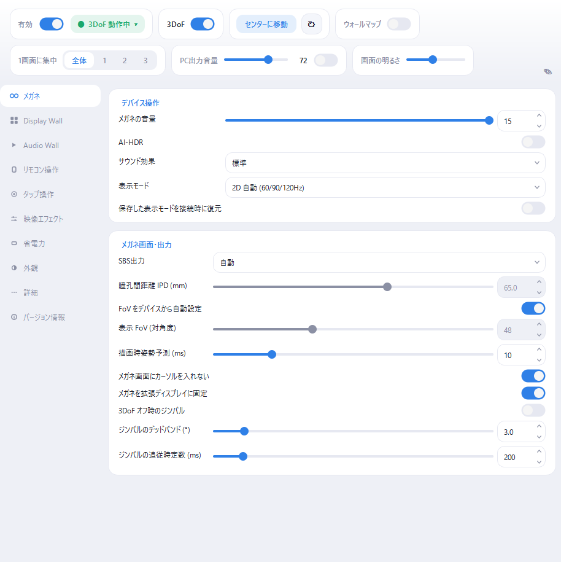
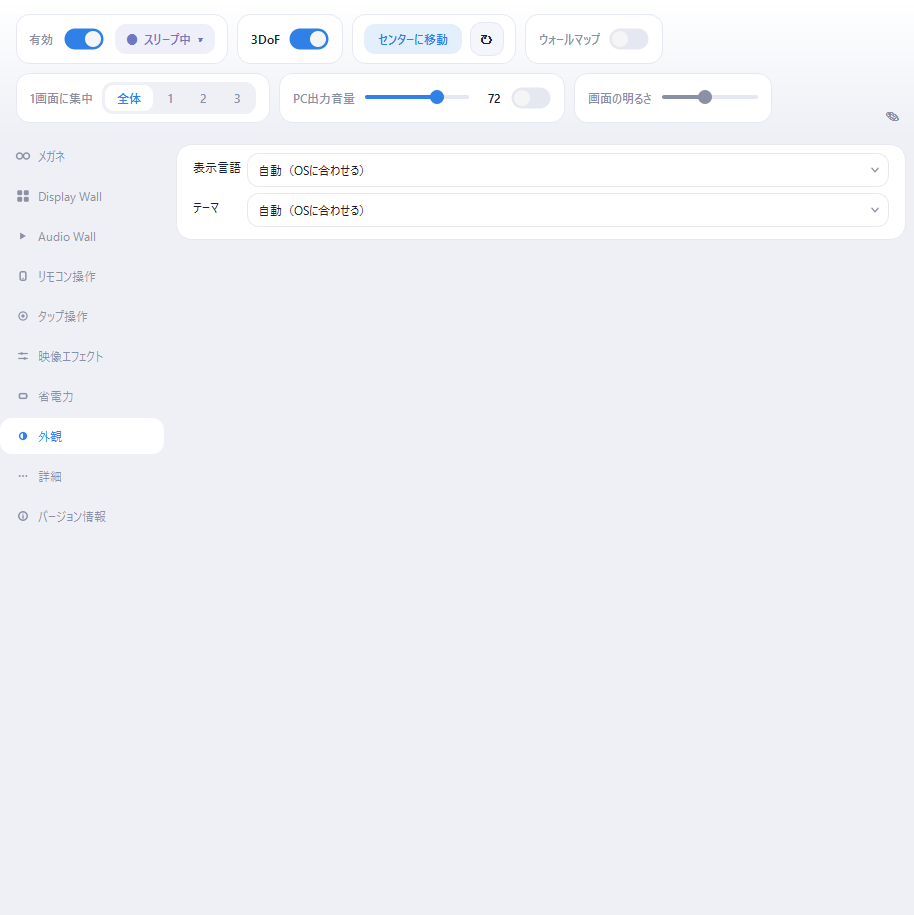

nyan Real / Spatial Wall ユーザーマニュアル
メガネをかけると、目の前の空間にディスプレイが並びます。頭を動かせば視界が 動き、ディスプレイはその場に留まります。このマニュアルは、つないでから 自分好みに整えるまでをひととおり案内します。
個々の設定項目の説明は、アプリ内でその項目にマウスを重ねると出ます。 ここではその手前にある「何のために、どういう順番で使うか」を扱います。
このアプリについて
対応するメガネを USB でつなぐと、PC のディスプレイをウォールとして 空間に並べ、頭の動きに合わせて描き直します。ディスプレイは実物・仮想を 問わず並べられ、音も画面の位置から聞こえるようになります。
主な機能は 2 つです。
- Display Wall — 複数のディスプレイを空間に並べて表示します。OS 側の ディスプレイ配置がそのままウォールになるのが基本の考え方で、普段どおり OS の「画面の配置」を変えれば、空間の並びもそのとおりに変わります。1 枚に 集中したり、屏風のように折り曲げたり、距離を変えたりもできます。
- Audio Wall — 再生中のアプリを自動で見つけ、そのウィンドウがある方向から 音が鳴るように混ぜます。アプリごとの設定は要りません。
外部とは通信しません。 これはこのアプリの基本方針です。インターネット上の サーバーとは一切やり取りせず、更新の自動確認も、利用状況やクラッシュ情報の送信も しません。ネットワークを使うのは次の 2 つだけで、どちらも自分のネットワークの中で 閉じています。
- スマホリモコン / Android メガネブリッジ — 同じネットワーク上の端末との通信
- Chrome 拡張からのタブ音声 — PC の中だけのループバック（
127.0.0.1）
サポートも自動化していません。不具合の報告は、「バージョン情報」から情報をコピーして GitHub Issues に貼る、という手動の流れです。
対応メガネ: XREAL（One Pro / One / 1S / Air 2 Pro / Air 2 / Air）、 ROG XREAL R1、xbx a01 / a01+、RayNeo Air、Rokid（Max / Air）、 VITURE（Pro / One / One Lite）、EPSON MOVERIO（BT-40 / BT-30C）、Nreal Light、 MAD Gaze Glow。機種ごとにできることが違うので、詳しくは 対応機種ページ を見てください。
動く環境: Windows のほか、Linux と macOS でも同じアプリが動きます。
| OS | 必要なもの |
|---|---|
| Windows | Windows 10 バージョン 2004（build 19041）以降の 64bit 版 |
| Linux（GNOME） | GNOME 46 以降（Wayland セッション） |
| Linux（Raspberry Pi） | Raspberry Pi OS trixie 以降 + labwc |
| macOS | macOS 14.4 以降（実験的。一部の機能が未対応です） |
どの環境でも、映像出力できる USB-C ポートまたは HDMI 変換と、メガネ本体が 要ります。ネットワーク接続は必須ではありません（スマホリモコンを使うときだけ、 スマホと PC が同じネットワークに繋がっている必要があります）。OS ごとの機能差は 付録の表にまとめてあります。
インストールと最初の起動
Windows
インストーラー（nyan-real-spatial-wall-*-installer.exe）とポータブル ZIP の
どちらでも動きます。ポータブル版は展開して spatial-wall.exe を実行するだけで、
インストールは不要です。
署名について: 現在の配布物にはコード署名がないため、初回起動時に Windows の SmartScreen が警告を出すことがあります。「詳細情報」→ 「実行」で進めてください。
Linux（GNOME）
.deb パッケージを apt install で導入します。仮想ディスプレイは GNOME の
画面共有機能（Mutter ScreenCast）を使うので、追加のドライバーは要りません。
Linux（Raspberry Pi / labwc）
専用の .deb を導入します。仮想ディスプレイは labwc の機能を使います。
インストール時に udev ルールが入り、メガネへ USB でアクセスできるようになります。
macOS 実験的な対応です。購入時または配布時に案内された最新版を使い、同梱の README で対応アーキテクチャと署名状態を確認してください。
どの環境でも、起動後の使い方はこの先で共通です。
起動するとタスクトレイに常駐します。ウィンドウを閉じても終了せず、 トレイのアイコンから再表示できます。終了はトレイアイコンのメニューから 「終了」を選びます。
最初に見えるのは、上部の操作パネルと、左側のカテゴリ一覧です。
- 有効 — このアプリ全体のマスタースイッチです。オフにすると描画も ディスプレイの操作も止まります。
- 3DoF — 頭の追従です。オフにすると、ウォールが視界に固定されます。
- センターに移動 — 今向いている方向を正面として、ウォールを配置し直します。
- ウォールマップ — ウォールを小さな平面図で表示します（後述）。

メガネをまだつないでいなくても設定はひととおり触れます。接続したメガネが 検出されて頭の追従が始まると、状態表示が「3DoF 動作中」に変わります。
メガネをつなぐ
USB でつなぐと自動で検出されます。メガネのカテゴリに、検出した機種・ IMU の経路・メガネのディスプレイが表示されます。
通常のメガネ表示は、独立した拡張ディスプレイである必要があります。 複製表示や「セカンドスクリーンのみ」だと、ウォールが取り込むはずの画面が 隠れてしまうためです。既定では自動で拡張ディスプレイに切り替え、デスクトップの 隅へ寄せます。この隅は他のディスプレイと 1 点だけで接するので、カーソルや ドラッグ中のウィンドウがメガネ側へはみ出しません。複製中はメガネと相手画面が同じ 表示元を共有するため、独立した拡張画面への切り替えが完了するまでウォール出力を開始しません。 Windowsでは無効化された対応メガネも再有効化します。
条件付き機能として、実機 EDID に Microsoft HMD VSDB を持つ表示モードでは、Windows がメガネを
HeadMounted と分類してデスクトップから外します。Windowsではこの状態を自動検出し、
メガネを排他取得して直接表示します。現時点の実機確認は、HMD VSDBを書き込んだa01+の
2D 90Hz / SBS 72Hzだけです。アプリの設定から一般のメガネをHMD化する機能ではありません。
HMD中は拡張画面の設定、隅寄せ、メガネ側の
カーソルフェンス、フルスクリーン排他は使いません。
つないだら次を確認してください。
- 表示モード — 2D か 3D SBS か、リフレッシュレートを選びます。 72Hz / 90Hz 系のモードは OLED のデューティ比も下がるため、見回したときの 残像が減ります。「保存した表示モードを接続時に復元」は既定でオフです。 オフでも手動選択は記憶され、通常モードの復元にも使えます。最後に記憶したのが HMD対応モードの場合は、その切り替えが安定するPCでだけオンにしてください。
- SBS 出力 — 「自動」のままで、たいていのモードは正しく判別されます。 ハーフ SBS のモードだけは解像度から判別できないので、手動でオンにします。
- 明るさ / 音量 — メガネ側で調整できる機種なら、ここから操作できます。 メガネ内蔵アンプの音量と PC 側の音量は掛け算になるので、PC 側が 100% でも 小さいときはメガネ側を上げてください。
タップ操作（対応機種のみ）: メガネのツルを 2 回 / 3 回叩くと、再生・一時停止や 音量、センターに移動などを実行できます。反応が悪いときは「タップ操作」の カテゴリから較正してください。メガネに指示が表示されます。
居眠り対策: しばらく動かないとスリープに入り、画面を消します。 動かせば戻ります。時間と感度は「省電力」で変えられます。
ウォールを組む
Display Wall のカテゴリで、どのディスプレイを並べるかと、どう並べるかを 決めます。
並べるディスプレイを選ぶ 図には OS 側の現在のディスプレイ配置が表示されます。タイルをクリックすると、 そのディスプレイをウォールに含めるかどうかが切り替わります。除外したタイルは 薄く表示され、ウォールを空にしないよう最後の 1 枚は除外できません。メイン ディスプレイもほかのディスプレイと同じ方法で切り替えられます。メガネ自身の ディスプレイはウォールには含まれません。
並べ方を決める
Spatial Wall にはレイアウト方式の選択はなく、OS のディスプレイ配置がそのまま ウォールになります。図のタイルをドラッグすると配置を編集できます。表示された 適用を押すと OS 側のディスプレイ配置も変更され、キャンセルを押すと編集前の 配置に戻ります。OS のディスプレイ設定で配置を変えた場合も、ウォールに反映されます。
ディスプレイの枠を表示をオンにすると、隣り合うディスプレイの間に細い黒線が 入ります。ディスプレイ間の隙間や外側の余白を数値で設定する項目はありません。
見る位置を決める
- センターに移動 — 今の向きを正面にします。基準にするディスプレイを 指定しておくと、そのディスプレイが正面に来ます。
- 1画面に集中 — ウォールの中の 1 枚だけを表示します。作業に没入したいときに 使います。「なし」で全体に戻ります。
- スクリーン距離 — ウォールまでの距離です。物理サイズを保ったまま 動かすので、近いほど大きく見えます。0.5m より近いと目が疲れやすいので、 短時間の演出向けと考えてください。
- スクリーンサイズ係数 — 距離とは別に、ウォール全体の物理サイズを調整します。
- スクリーン湾曲 / 屏風モード — ウォールを手前に湾曲させます。屏風モードを オンにすると、なめらかな曲面ではなくディスプレイの継ぎ目で折れ、屏風のように なります（1 枚のディスプレイの途中で折れることはありません）。
ウィジェット: ウィジェットを追加から時計などの小さなパネルをウォールの縁に 貼り付けられます。タイルのクリックで表示 / 非表示、ドラッグで移動、右下の角を ドラッグしてリサイズ、右クリックで設定を開きます。
仮想ディスプレイ
物理的なディスプレイが足りなくても、仮想ディスプレイを足せばウォールを 広げられます。「詳細」→「仮想ディスプレイ」から追加します。
Windows では専用のドライバーが要ります（nyan Real / Virtual Display Driver を推奨、ParsecVDisplay も使えます）。ドライバーは同梱していないので、 別途インストールしてください。Linux / macOS では OS 組み込みの機能を使うため、 導入するものはありません。
追加した仮想ディスプレイは、このアプリが動いている間だけ存在します。次回 起動時には同じ一覧が復元されます。
待機と再開 仮想ディスプレイはメガネ越しでしか見えないので、メガネを外している間は そこに置いたウィンドウが行方不明になります。待機を押すと、仮想ディスプレイを 一時的に取り外し、載っていたウィンドウをこちらの画面へ回収します。再開で 元の配置に戻ります。メガネを着けてマスタースイッチをオンにすると自動で再開します。
macOSでは、Mac本体がスリープすると仮想ディスプレイも自動で待機し、復帰後に 物理ディスプレイが安定するまで少し待ってから再開します。
マスタースイッチを切ったときやメガネを抜いたときに自動では待機しません。 Windows / Linuxでは見えない画面をウォールマップから操作できます。macOSでは自動アイドル中も 開いたウォールマップを使えますが、マスターオフやメガネ抜線後の回復表示にはまだ使えません。
ウォールマップ ウォール全体を小さな平面図として表示する窓です。仮想ディスプレイもそのまま マウスで操作できるので、メガネを外したままでも作業を続けられます。ホイールで 拡大縮小、ドラッグで移動、ダブルクリックで全体表示です。
macOS版では、自動アイドル中も開いたウォールマップを利用できます。マスターオフや メガネ抜線後の回復表示にはまだ対応していません。自動アイドル中の経路も実装済みですが、 実機確認待ちです。
ウォールマップを閉じても、この窓が閉じるだけです。仮想ディスプレイの切断と復帰には 待機 / 再開を使います。
カーソルが迷子にならないように Windows / macOS版では、メガネ画面と仮想ディスプレイにそれぞれ「カーソルを入れない」設定があります。 オンにすると、カーソルはその画面を通り抜けて反対側のディスプレイへ移動します。 メガネがHMDとしてデスクトップから外れている間は、メガネ側の設定は不要なので表示されません。 macOSでは初回に「入力監視」の許可が必要です。GNOME・Raspberry PiではOSの入力制御が 異なるため、この設定は表示されません。
ヒント: カーソルが時々隣のディスプレイの端へ飛ぶときは、Windows の 設定 > システム > ディスプレイ > 複数のディスプレイ > 「ディスプレイ間でカーソルを簡単に移動できるようにする」をオフにしてください。 Windows 側の斜め移動補正と干渉しています。
音
出力先: 上部の「音声の出力先」で、PC で聞く音の行き先を選びます。 「メガネに自動」にすると、メガネの USB オーディオを検出したときに 1 回だけ 切り替えます。特定のデバイスを選んだ場合は、そのデバイスが未接続の間も選択を 覚えていて、見つかり次第戻ります。
Audio Wall: 「Audio Wall」のカテゴリで空間音響をオンにすると、音を鳴らして
いるアプリを自動で見つけ、そのウィンドウがある方向から聞こえるように混ぜます。
アプリごとの設定は要りません。混ぜたくないアプリは除外リストに実行ファイル名を
書きます（例: discord.exe）。
音はアプリ単位で方向が決まります。1 つのアプリが複数の画面にまたがっている 場合は、1 方向にまとまります。
ブラウザのタブ: Chrome / Edge 116 以降に拡張機能「nyan Real Audio Wall connector」を入れると、タブごとの音も空間に配置できます。Windows と Linux に対応し、 macOS の Chrome タブ取り込みは未対応です。DRM メディアと CORS 許可のない 別オリジンのメディアは、通常どおり ブラウザから再生され、空間化されません。Web Audio で直接生成された音声も 取り込めない場合があります。
操作する
ショートカットキー（「リモコン操作」→「ショートカットキー」） センターに移動、集中の切り替え（次 / 前 / 解除）、3DoF とマスターのオン・オフを Windows、Raspberry Pi（labwc）、macOS ではグローバルホットキーに割り当てられ、 他のアプリを使っている間でも効きます。macOS のマスタートグルは既定で Control+Shift+Esc です。GNOME 版はグローバルショートカットの登録に未対応のため、 この設定行は表示されません。
スマホリモコン（「リモコン操作」） 同じネットワーク上のスマホを、タッチパッド付きのリモコンにできます。有線 LAN の PC と Wi-Fi のスマホのように、経路が違っても同じネットワークなら届きます。 表示される QR コードをスマホのカメラで読み取るだけで、アプリのインストールは 要りません。マウス操作、センターに移動、ジャイロの再較正、スクリーン距離の変更が できます。
QR を読めない状況（メガネが唯一のディスプレイのときなど）では、コードで ペアリングを使ってください。スマホのブラウザで URL を開き、表示された 6 桁のコードを入力します。
初回に有効化したとき Windows のファイアウォールが確認を出したら、 「アクセスを許可する」を選んでください。同じネットワークの中からしか届きません。 URL に含まれるトークンを知らない端末からの操作は拒否されます。
スマホリモコン、Androidアプリのダウンロード、メガネブリッジはLAN内で 暗号化されていないHTTP/WebSocketを使用します。共有・公衆Wi-Fiではなく、 信頼できる私設ネットワークでのみお使いください。
Android メガネブリッジ（「リモコン操作」） メガネを PC ではなく Android スマホに挿して使う経路です。スマホ側のアプリが メガネの USB を持ち、映像と頭の姿勢を PC のウォールへ橋渡しします。PC の USB を 占有しない構成にしたいときや、PC から離れて使いたいときに向きます。映像と音声を メガネの Presentation へ送る経路は Windows と macOS に対応しています。macOS では 画面収録と音声収録の許可が必要です。SC-52D + XREAL Airで、Macアプリ再起動後の自動再接続、 物理画面と2枚の仮想ディスプレイの映像表示、頭の動きへの追従を確認済みです。音声経路は 接続まで確認済みで、実際の音声出力は未確認です。高画質モードと外部Video Input はWindows専用です。
スマホのアプリが接続すると、「リモコン操作」に接続状態が表示されます。 メガネの明るさ・表示モード・外部ディスプレイの状態や、IMU と映像チャンネルが つながっているかを、PC 側から確認できます。ブリッジ経由でも、機種ごとの設定は PC に直接つないだときと同じように扱われます。
Stream Deck（「詳細」→「Stream Deck」） 「このPCからの操作を受け付ける」をオンにすると、ループバック専用 （127.0.0.1）の制御ポートが開き、Stream Deck 用のプラグインからホットキーと 同じ操作ができます。他の PC からは届かないので、トークンはありません。
ログイン時に起動（「詳細」） Windows版、パッケージ導入したLinux版、macOSの.appでは、ログイン時に自動起動できます。 macOSでは承認のため「システム設定」>「一般」>「ログイン項目」が開くことがあります。 ログイン起動時はコントロール窓を開かず、メニューバーに待機します。macOSの登録・承認・ ログイン起動経路は実機確認待ちです。
見え方と負荷の調整
滑らかさ（「省電力」） - 壁キャプチャ更新頻度 — キャプチャの上限です。「自動」で足りますが、 負荷を下げたいときは 45Hz や Eco（30Hz）にできます。 - フレームスキップ — 何も動いていない間の描画を省いて電力を節約します。 PC に余裕があるなら、オフにしたほうが動き出しが滑らかです。
画質（「映像エフェクト」） - バンディング低減（デバンド） — 暗いグラデーションに出る縞を減らします。 - 輪郭スムージング — 文字や線のちらつきを抑えます。
残像とちらつき（メガネ） - 低残像 Duty — 頭を動かしている間だけ OLED のデューティ比を下げ、残像を 減らします（その分暗くなります）。XREAL Air / Nreal Light が対象です。 - フルスクリーン排他 — 通常は不要です。スキャンアウトが定格の Hz を 下回る構成（一部の NVIDIA ハイブリッド環境など）でだけ試してください。 デスクトップ出力専用で、DisplayCoreを使うHMD中は無効になります。
外観（「外観」） 表示言語は「自動（OSに合わせる）」が既定です。日本語または英語を明示的に 選ぶこともできます。変更時に案内が出るので、Spatial Wall を再起動すると 新しい言語が反映されます。
テーマは「自動（OSに合わせる）」「ライト」「ダーク」から選べます。

困ったとき
メガネが検出されない - USB ケーブルが映像とデータの両方を通すものか確認してください。充電専用の ケーブルでは検出できません。 - One 系の機種では、メガネ側の USB Ethernet / TCP-IP が有効である必要があります。 無効だと頭の追従が動きません（メガネ内に案内が出ます）。 - DP オーディオモードになっていると、センサーが読めません。USB オーディオへ 切り替えてください。
メガネに何も映らない / デスクトップが消えた - 通常の拡張画面として使う場合は、表示が「複製」や「セカンドスクリーンのみ」に なっていないか確認してください。「メガネを拡張ディスプレイに固定」をオンにすると Windowsでは対応メガネの物理ターゲットを識別し、無効化や複製状態を接続のたびに自動で直します。 - HMD対応モードへの切り替え後に暗いままなら、「保存した表示モードを接続時に復元」を オフにし、ケーブルを抜き差ししてください。それでも通常画面へ戻らなければWindowsを 再起動してください。終了時に通常画面への復帰を確認している間は、アプリを強制終了しないでください。 - HMD scanoutまでの実機確認は現在RTX 3060だけです。検証したRadeon 780M環境 (driver 32.0.31035.1003)ではHMD Targetが生成されませんでした。Intel UHD (driver 32.0.101.7088)ではHeadMounted Targetが出るサイクルと、同じモードでもStandardのままの サイクルがあり、取得・scanoutは未確認です。
カクつく・コマ落ちする - 取り込みレートを下げてみてください。 - フレームスキップをオフにすると、動き出しが滑らかになることがあります。 - 通常のデスクトップ出力でスキャンアウトが 60Hz に落ちている疑いがあるときだけ、フルスクリーン排他を 試してください。
音が出ない / 音の向きがおかしい - 「音声の出力先」がメガネになっているか確認してください。 - Audio Wall の音はアプリ単位です。ウィンドウを目的のディスプレイへ移動すると 方向が変わります。 - Windows の既定の出力デバイスは、自分に聞こえないデバイスにしておいてください （アプリ自身の音が二重に鳴るのを防ぐため）。
カーソルが行方不明になる Windows / macOS 版では「カーソルを入れない」設定をオンにしてください。macOSでは初回に 「入力監視」の許可が必要です。GNOME / Raspberry Pi、またはすでに入り込んでしまった場合は ウォールマップから操作できます。macOSでControl+Shift+Escを押すとマスターがオフになり、 メガネ上のワープ表示が消えます。Spatial Wallが自動的に仮想ディスプレイをメインにしていた 構成では、ワープを消す前にメガネなど見える物理ディスプレイへ戻します。
それでも解決しないとき 「バージョン情報」の「問い合わせ用情報をコピー」を押すと、製品名・バージョン・ ビルド時刻・正確な OS・接続中のメガネがクリップボードに入ります。 問い合わせフォームの 「問い合わせ用情報」欄へ貼り付け、OS と AR グラスを選んだうえで、「症状」と 「再現手順」をそれぞれの欄へ記入してください。ログや画像を添付するときは、 個人情報や秘密情報が含まれていないことを確認してください。
付録
OS による機能差
| 機能 | Windows | GNOME | Raspberry Pi | macOS |
|---|---|---|---|---|
| Display Wall / Audio Wall | ✅ | ✅ | ✅ | ✅ |
| 仮想ディスプレイ | ドライバーが要る | OS 組み込み | OS 組み込み | OS 組み込み |
| ウォールマップ | ✅ | ✅ | ✅ | 🟡 ワープ/自動アイドル中。マスターオフ回復未対応・実機未確認 |
| カーソルフェンス | ✅ | 非対応 | 非対応 | 🟡 入力監視が必要・実機確認待ち |
| タップ操作 | ✅ | ✅ | ✅ | 未確認 |
| スマホリモコン | ✅ | ✅ | ✅ | 未確認 |
| グローバルホットキー | ✅ | 非対応 | ✅ | ✅ |
| Android メガネブリッジ出力 | ✅ | 非対応 | 非対応 | 🟡 映像/頭追従を実機確認済み・実音声未確認 |
macOS は全体が実験的な扱いです。使えない機能は、その項目自体が画面に出ません。
設定の保存場所
設定とログは %APPDATA%\nyan-real\（Linux / macOS では各 OS のユーザー設定
ディレクトリ）の下に保存されます。ログはアプリ内からフォルダーを開けます。
設定を初期化する 「詳細」の「設定を既定値に戻す」で、すべての設定が初期状態に戻ります。 元には戻せません。
バージョンの確認
「バージョン情報」にバージョンとビルド時刻が出ます。spatial-wall.exe を右クリックして
プロパティ > 詳細でも読めます。
ライセンス
「バージョン情報」の「使用許諾契約書を表示」で、このアプリの使用条件を読めます。
インストーラーが最初に表示するものと同じ文書で、アプリと同じ場所に
EULA.ja.txt / EULA.en.txt としても置いてあります。正文は日本語版です。
同梱物のライセンスは「サードパーティ ライセンスを表示」から読めます。全文を
添付する必要があるものについては、アプリと同じ場所の licenses/ に入っています。